计算机网络
相关链接：
一、计算机网络基础
网络分层是学习计算机网络的第一张地图。没有这张地图，HTTP、TCP、IP、以太网、DNS 这些概念很容易堆在一起，分不清谁依赖谁、谁负责什么。
常见的两套分层模型是 OSI 七层模型和 TCP/IP 四层模型。前者更适合建立概念框架，后者更贴近互联网实际落地。
1.1 OSI 七层模型
OSI 七层模型 是国际标准化组织提出一个网络分层模型

每一层都专注做一件事情，并且每一层都需要使用下一层提供的功能比如传输层需要使用网络层提供的路由和寻址功能，这样传输层才知道把数据传输到哪里去。
为什么 OSI 模型理论完整，但实际没有成为互联网主流实现？
- OSI 的专家缺乏实际经验，他们在完成 OSI 标准时缺乏商业驱动力
- OSI 的协议实现起来过分复杂，而且运行效率很低
- OSI 制定标准的周期太长，因而使得按 OSI 标准生产的设备无法及时进入市场（20 世纪 90 年代初期，虽然整套的 OSI 国际标准都已经制定出来，但基于 TCP/IP 的互联网已经抢先在全球相当大的范围成功运行了）
- OSI 的层次划分不太合理，有些功能在多个层次中重复出现。
1.2 TCP/IP 四层模型
TCP/IP 四层模型 是目前被广泛采用的一种模型，我们可以将 TCP/IP 模型看作是 OSI 七层模型的精简版本，由以下 4 层组成：
- 应用层
- 传输层
- 网络层
- 网络接口层
需要注意的是，我们并不能将 TCP/IP 四层模型 和 OSI 七层模型完全精确地匹配起来，不过可以简单将两者对应起来，如下图所示：

1.3 在浏览器地址栏输入 URL 到页面展示
1.3.1 第一步：解析 URL 与检查缓存
打开浏览器，在地址栏输入 URL 并回车。浏览器做的第一件事不是发请求，而是解析 URL 并检查是否可以直接使用本地缓存。
URL（Uniform Resource Locator，统一资源定位符）是互联网上资源的唯一地址。网络上的每个可访问资源都对应一个 URL，理论上文件和 URL 一一对应。实际上也有例外，比如重定向或 CDN 场景下，多个 URL 可能指向同一份资源。
URL 的组成结构

- 协议（Scheme）：
URL的前缀表示采用的协议，最常见的是http和https，也有文件传输的ftp: 等。 - 域名（Host）：访问目标的通用名，也可以直接使用 IP 地址。域名本质上是 IP 地址的可读版本。
- 端口（Port）：紧跟域名后面，用冒号隔开。HTTP 默认 80，HTTPS 默认 443，如果使用默认端口可以省略。
- 资源路径（Path）：从第一个 / 开始，表示服务器上的资源位置。早期设计中路径对应服务器上的物理文件，现在通常是后端路由映射的虚拟路径。
- 查询参数（Query）：
?之后的部分，采用key=value键值对形式，多个参数用&隔开。服务器解析请求时会提取这些参数。 - 锚点（Fragment）：
#之后的部分，用于定位到页面内的某个位置。锚点不会作为请求的一部分发送给服务端，仅由浏览器本地处理。
浏览器缓存检查
解析完 URL 之后，浏览器会先检查 HTTP 缓存，看是否已经有该资源的有效副本：
- 强缓存：检查
Cache-Control（如max-age）或Expires头，判断缓存是否仍在有效期内。如果有效，直接使用缓存，跳过后续所有网络请求。 - 协商缓存：强缓存未命中时，浏览器向服务器发送验证请求（携带
If-Modified-Since或If-None-Match），服务器判断资源是否变化。如果未变化，返回304 Not Modified，浏览器继续使用本地缓存；如果已变化，返回200 OK和新资源。
HTTP 缓存命中时，整个访问过程在此结束，无需发起网络请求
1.3.2 第二步：DNS 解析
DNS（Domain Name System，域名系统）要解决的是域名和 IP 地址的映射问题。域名只是便于人类记忆的名字，网络通信真正需要的是 IP 地址。
DNS 解析过程
- 浏览器 DNS 缓存：浏览器自身维护了一份 DNS 缓存，先检查缓存中是否有该域名的记录且未过期。
- 操作系统 DNS 缓存：浏览器缓存未命中时，向操作系统发起 DNS 查询请求。操作系统也有自己的 DNS 缓存。
- 本地 DNS 服务器：操作系统配置的本地 DNS 服务器（通常由 ISP 提供，或使用公共 DNS 如
8.8.8.8、114.114.114.114）。本地 DNS 服务器如果有缓存且未过期，直接返回结果。 - 递归/迭代查询：本地 DNS 服务器缓存未命中时，它会代替客户端发起迭代查询——先问根 DNS 服务器，再问顶级域 DNS 服务器（如 .com），最后问权威 DNS 服务器，逐级获取目标 IP 地址。
- 返回结果并缓存：本地 DNS 服务器拿到最终结果后返回给客户端，同时在本地缓存一份，供后续查询使用。
实际场景中，本地 DNS 服务器通常已经缓存了大量 TLD 服务器地址，多数查询不需要从根服务器开始，跳过根服务器直接查 TLD 的情况非常普遍。
1.3.3 第三步：建立传输连接
拿到目标服务器的 IP 地址后，浏览器需要与服务器建立传输连接。
下面先介绍 HTTP/1.1 和 HTTP/2 常用的 TCP 连接；如果协商使用 HTTP/3，则会改为建立 QUIC 连接，QUIC 构建在 UDP 之上。
TCP 三次握手
TCP 三次握手的目的是同步双方的初始序列号，并确认双方的收发路径是可用的。
- 第一次握手（SYN）：客户端发送 SYN 报文段，携带自己的初始序列号 seq=x，进入 SYN_SENT 状态。
- 第二次握手（SYN+ACK）：服务端收到后回复 SYN+ACK，携带自己的初始序列号 seq=y，确认号 ack=x+1，进入 SYN_RCVD 状态。
- 第三次握手（ACK）：客户端收到后发送 ACK，确认号 ack=y+1，双方进入 ESTABLISHED 状态，连接建立完成。
三次握手的设计不是为了「多走一次」，而是让双方都能确认：对方能收到自己的数据，自己也能收到对方的数据。两次握手做不到这一点——服务端在第二次握手后，还不知道客户端是否收到了自己的 SYN+ACK。
如果是 HTTPS：TLS 握手
如果使用基于 TCP 的 HTTPS，TCP 连接建立之后还要进行 TLS 握手。
HTTP/3 则在 QUIC 建连过程中集成 TLS 1.3。
TLS 的核心目标是三个：加密（防窃听）、认证（防冒充）、完整性校验（防篡改）。
TLS 握手大致流程（以 TLS 1.2 RSA 密钥交换为例）：
- Client Hello：客户端发送支持的 TLS 版本、加密套件列表和一个随机数。
- Server Hello：服务端从中选择一个加密套件，返回自己的证书、另一个随机数。
- 密钥交换：客户端验证服务端证书的合法性（通过 CA 签名验证），然后生成预主密钥（Pre-Master Secret），用服务端公钥加密后发送给服务端。双方根据预主密钥和之前交换的两个随机数，计算出对称加密的会话密钥。
- 完成：双方用会话密钥加密通信，握手结束。
1.3.4 第四步：发送 HTTP 请求
TCP 连接（以及可能的 TLS 通道）建立好之后，浏览器就可以发送 HTTP 请求了。
HTTP 请求报文结构
一个典型的 HTTP/1.1 请求报文如下：
GET /index.html HTTP/1.1
Host: www.example.com
User-Agent: Mozilla/5.0 (Macintosh; Intel Mac OS X 10_15_7)
Accept: text/html,application/xhtml+xml
Accept-Encoding: gzip, deflate, br
Accept-Language: zh-CN,zh;q=0.9,en;q=0.8
Connection: keep-alive
Cookie: session_id=abc123
- 请求行：
GET /index.html HTTP/1.1—— 请求方法（GET）、资源路径（/index.html）、协议版本（HTTP/1.1）。 - Host 头：指定目标主机名。这是 HTTP/1.1 的强制要求，因为同一台服务器（同一个 IP）可能通过虚拟主机托管多个网站。
- 其他请求头：
User-Agent（客户端信息）、Accept（可接受的响应类型）、Accept-Encoding（支持的压缩方式）、Cookie（携带的状态信息）等
服务器处理请求
服务器收到请求后，经过一系列处理生成响应：
- 接收请求：Web 服务器（如 Nginx、Tomcat）接收并解析 HTTP 请求报文。
- 路由分发：根据 URL 路径将请求路由到对应的后端处理逻辑（Controller、Servlet 等）。
- 业务处理：执行具体的业务逻辑，可能涉及数据库查询、缓存读取、调用其他服务等。
- 构建响应：将处理结果封装成 HTTP 响应报文。
HTTP 响应报文结构
HTTP/1.1 200 OK
Content-Type: text/html; charset=UTF-8
Content-Encoding: gzip
Content-Length: 1256
Cache-Control: max-age=3600
Set-Cookie: session_id=xyz789; Path=/
<!DOCTYPE html>
<html>
...
</html>
- 状态行：
HTTP/1.1 200 OK—— 协议版本、状态码（200）、状态描述。 - 响应头：
Content-Type（响应体类型）、Content-Encoding（压缩方式）、Cache-Control（缓存策略）、Set-Cookie（设置 Cookie）等。 - 响应体：请求的实际内容，如 HTML 文档、JSON 数据、图片二进制数据等。
常见状态码

1.3.5 第五步：数据包的封装与转发
HTTP 请求从浏览器发出后，数据并不是直接「飞」到服务器的。它需要经过协议栈的逐层封装，在物理网络上一跳一跳地转发到目的地。
数据封装过程
应用层的 HTTP 报文，经过传输层、网络层、链路层的逐层封装，最终变成能在物理介质上传输的比特流：

每一层只关心自己要添加的头部信息，并使用下层提供的服务来传输数据：
- 传输层（TCP）：添加源端口和目的端口，用序列号和确认号保证可靠传输。
- 网络层（IP）：添加源 IP 和目的 IP，负责寻址和路由，决定数据包从源到目的经过的路径。
- 链路层：添加源 MAC 和目的 MAC 地址，负责在相邻节点之间传输数据帧。
网络层的路由转发
数据包从源主机到目的主机，通常需要经过多个路由器中转。网络层的核心功能就是路由与转发：
- 路由：确定分组从源到目的经过的路径（由路由协议如 OSPF、BGP 等计算）。
- 转发：将分组从路由器的输入端口转移到合适的输出端口。
每个路由器维护一张路由表，根据目的 IP 地址查表决定下一跳。数据包在网络中就像快递包裹，每一站只看「下一站发到哪里」，不用关心全程路径
ARP 协议：从 IP 地址到 MAC 地址
数据帧在链路层传输时，需要知道下一跳设备的 MAC 地址，而不能只用 IP 地址。
ARP（Address Resolution Protocol，地址解析协议）就是解决「已知 IP 地址，如何获取对应 MAC 地址」的问题。
ARP 的工作方式是广播问询、单播响应：
- 主机先查本地 ARP 缓存表，看是否已有目标 IP 对应的 MAC 地址。
- 缓存未命中时，在局域网内广播一个 ARP 请求：「谁的 IP 是 xxx.xxx.xxx.xxx？请告诉我你的 MAC 地址。」
- 目标设备（或路由器接口）收到后，以单播方式回复自己的 MAC 地址。
- 请求方收到响应后，将 IP-MAC 映射存入 ARP 缓存表，后续通信直接使用。
如果目标主机不在同一子网，主机不需要知道最终目标的 MAC 地址，只需要知道本地网关（路由器）的 MAC 地址即可。数据包先发给网关，网关再逐跳转发到目标网络。
网络地址转换（NAT）
在大多数家庭和企业网络中，内网主机使用的是私有 IP 地址（如 192.168.x.x），不能直接在公网上路由。
NAT（Network Address Translation）协议负责在内网和公网之间转换 IP 地址。
当内网主机发送数据包到公网时，NAT 设备（通常是路由器）会将源 IP 地址从私有地址替换为公网地址，并记录端口映射关系。响应数据包返回时，NAT 再根据映射表把目的地址转换回内网主机的私有地址。
1.3.6 第六步：浏览器解析与渲染
服务器返回 HTML 响应后，浏览器的工作才真正开始。浏览器需要解析 HTML、构建 DOM 树、加载子资源、计算样式、布局并最终渲染到屏幕上。
HTML 解析与 DOM 构建
浏览器拿到 HTML 文档后，从上到下逐行解析：
- 构建 DOM 树：解析 HTML 标签，生成文档对象模型（DOM）树，表示页面的结构。
- 构建 CSSOM 树：遇到
<link>引用的 CSS 文件或<style>标签时，下载并解析 CSS，生成 CSS 对象模型（CSSOM）树，表示页面的样式规则。 - 构建渲染树：将 DOM 树和 CSSOM 树合并，生成渲染树。渲染树只包含需要显示的节点及其样式信息（display: none 的元素不会出现在渲染树中）。
- 布局（Layout）：计算渲染树中每个节点的位置和大小。
- 绘制（Paint）：将布局后的渲染树转换为屏幕上的像素。
- 合成（Composite）：将不同图层合成最终画面显示在屏幕上。
子资源加载
HTML 文档通常会引用大量外部资源：
- CSS 文件（
<link rel="stylesheet">）：普通阻塞样式表会阻塞渲染，浏览器通常会等 CSS 加载并解析完成后才进行布局和绘制，因为 CSS 可能改变元素的布局。通过media属性、动态加载或preload等方式可以改变这一行为。 - JavaScript 文件（
<script>）：默认会阻塞 HTML 解析，因为 JavaScript 可能修改 DOM。可以通过async或defer属性改变加载行为。 - 图片、字体等：不会阻塞 HTML 解析，但需要在加载完成后才能显示。
这些子资源的加载会触发额外的 HTTP 请求。如果使用 HTTP/1.1，浏览器通常会对同一域名维护最多 6 个并发 TCP 连接来并行下载资源。HTTP/2 的多路复用机制则允许在同一个 TCP 连接上并行传输多个资源。
JavaScript 执行
JavaScript 的执行会阻塞 HTML 解析。浏览器遇到 <script> 标签时，会暂停 DOM 构建，先下载并执行脚本。如果脚本中有 DOM 操作，可能会触发 DOM 重构和页面重排（Reflow）或重绘（Repaint）。
现代前端开发中常用的优化手段包括：
- 将
<script>放在<body>底部或使用defer属性，避免阻塞 DOM 解析。 - 使用
async属性异步加载不影响 DOM 的脚本。 - 通过 CDN 加速静态资源加载。
- 利用浏览器缓存减少重复请求。
1.3.7 第七步：连接管理
页面和资源加载完成后，连接通常不会立刻断开，如何管理连接取决于 HTTP 版本和配置。下面的 HTTP/1.0、HTTP/1.1 和 HTTP/2 主要讨论 TCP 连接；HTTP/3 管理的是 QUIC 连接和流。
HTTP/1.0 短连接
HTTP/1.0 默认使用短连接：每次请求-响应完成后就关闭 TCP 连接。如果页面引用了 10 个外部资源，浏览器需要建立 10 次独立的 TCP 连接，每次都要经历三次握手和四次挥手，大量时间花在连接的建立和释放上。
HTTP/1.1 长连接（Keep-Alive）
HTTP/1.1 默认使用长连接（Connection: keep-alive）。一个 TCP 连接建立后可以连续发送多个请求和接收多个响应，不需要每次都重新握手。这样页面中的 CSS、JS、图片等子资源可以复用同一个 TCP 连接来加载。
长连接不是永久的。服务器通常配置了空闲超时时间（如 Apache 的 KeepAliveTimeout），如果在超时时间内没有新的请求，服务器才会主动关闭连接。
HTTP/2 多路复用
HTTP/2 在长连接的基础上引入了多路复用。同一个 TCP 连接上可以同时传输多个请求和响应，数据被拆分成更小的帧并通过流（Stream）标识来区分归属。这解决了 HTTP/1.1 在应用层面的队头阻塞问题——前面的慢请求不会挡住后面的请求。需要注意的是，HTTP/2 仍然基于 TCP，当 TCP 层发生丢包时，同一连接上的所有流都会受影响（TCP 层队头阻塞）。HTTP/3 基于 QUIC 协议（UDP），才进一步缓解了这个问题。
连接关闭
当连接确实需要关闭时（主动关闭方发起）：
主动关闭方发送 FIN，表示自己没有数据要发了。
被动关闭方回复 ACK，进入 CLOSE_WAIT 状态，但还可以继续发送剩余数据。
被动关闭方数据发完后也发送 FIN。
主动关闭方回复最终 ACK，进入 TIME_WAIT 状态，等待 2MSL 后彻底关闭。
TIME_WAIT 状态的存在是为了确保最后的 ACK 能到达对端，同时让网络中残留的旧报文消散，避免干扰后续新连接。
二、应用层
2.1 常见应用层协议
2.1.1 HTTP：超文本传输协议
超文本传输协议（HTTP，HyperText Transfer Protocol） 是一种用于传输超文本和多媒体内容的应用层协议，最常见的使用场景就是 Web 浏览器与 Web 服务器之间的通信。
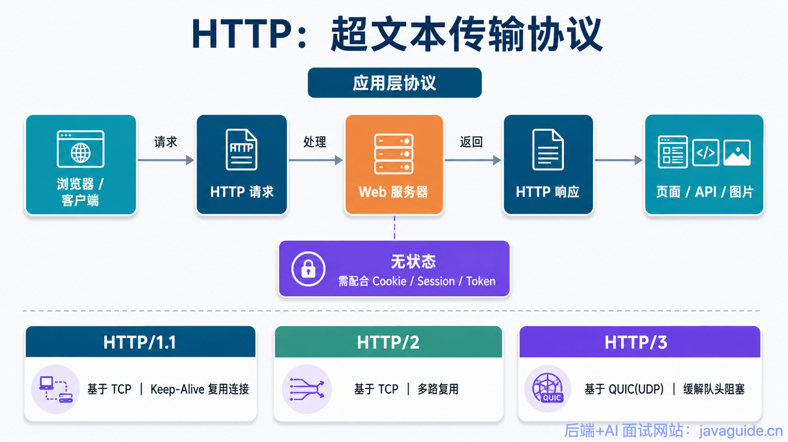
当我们在浏览器里访问一个网页时，浏览器会向服务器发送 HTTP 请求，服务器处理后返回 HTTP 响应。页面中的 HTML、CSS、JavaScript、图片、视频等资源，很多都是通过 HTTP 加载的。
HTTP 使用客户端-服务器模型，客户端发送 HTTP Request（请求），服务器返回 HTTP Response（响应），整个过程如下图所示。

需要注意的是，HTTP 是应用层协议，它本身不直接负责可靠传输。不同版本的 HTTP 底层依赖也不完全一样：
- HTTP/1.1：基于 TCP。
- HTTP/2：通常也基于 TCP，但引入了多路复用、头部压缩等能力。
- HTTP/3：基于 QUIC，而 QUIC 基于 UDP，主要用于降低连接建立开销，并缓解 TCP 队头阻塞带来的影响。
另外，HTTP 是一种无状态协议。服务端不会天然记住“上一次请求是谁发的、处于什么状态”。因此，在实际 Web 开发中，通常需要借助 Cookie、Session、Token（包括 JWT）等机制来维护用户登录态和会话状态。
2.1.2 WebSocket：全双工通信协议
WebSocket 是一种基于 TCP 连接的全双工通信协议，客户端和服务器可以在同一条连接上同时发送和接收数据。
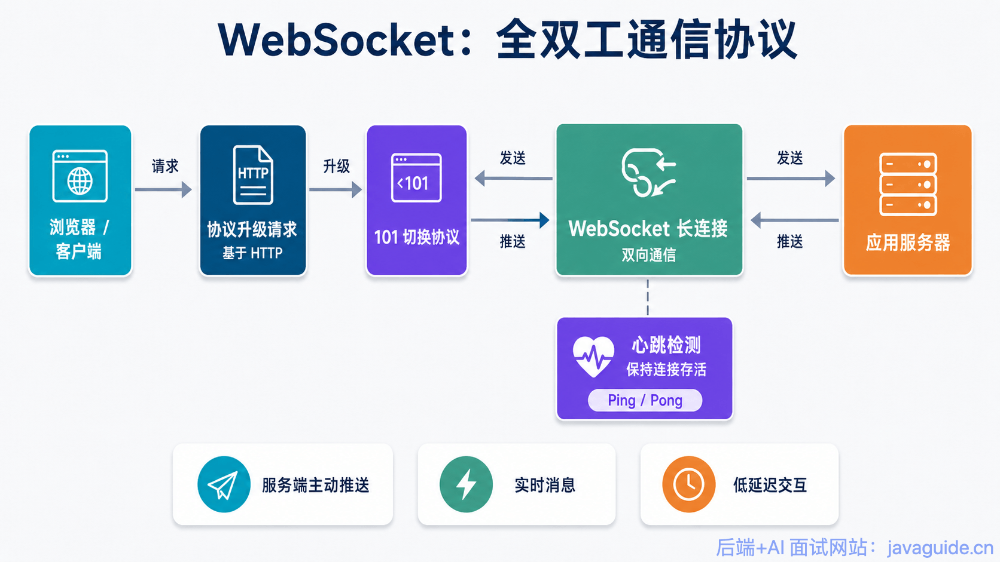
WebSocket 本质上仍然是应用层协议。它通常先通过一次 HTTP 请求发起协议升级，升级成功后，客户端和服务端之间会建立一条持久连接，后续就可以进行双向数据传输。这正好弥补了传统 HTTP 请求-响应模型在实时通信场景下的不足。
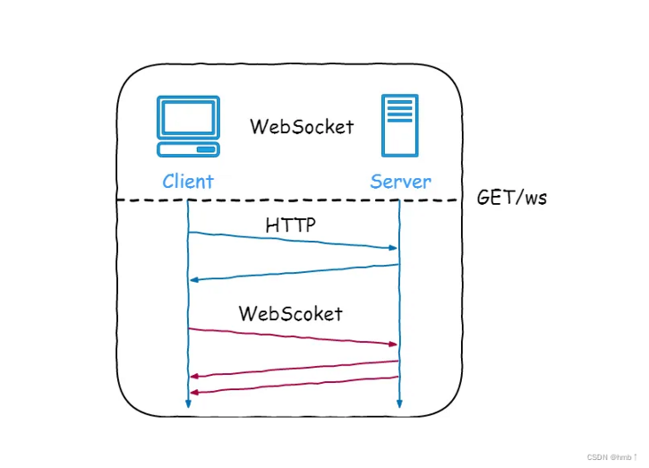
WebSocket 的常见应用场景：
- 视频弹幕
- 实时消息推送
- 实时游戏对战
- 多用户协同编辑
- 在线客服 / 社交聊天
- 股票行情、体育比分等实时数据更新
WebSocket 的工作过程：
- 客户端向服务器发送一个 HTTP 请求，请求头中包含
Upgrade: websocket、Connection: Upgrade、Sec-WebSocket-Key等字段，表示希望把当前连接升级为 WebSocket。 - 服务器收到请求后，如果支持 WebSocket，会返回 HTTP
101 Switching Protocols状态码，响应头中包含Upgrade: websocket、Connection: Upgrade、Sec-WebSocket-Accept等字段，表示协议升级成功。 - 协议升级后，客户端和服务器之间就建立了一条 WebSocket 连接，双方可以进行双向通信。
- WebSocket 数据以帧（Frame）的形式传输。一条完整消息可能会被拆分成多个帧发送，接收端再重新组装成完整消息。
- 客户端或服务器都可以主动发送关闭帧，另一方收到后也会回复关闭帧，然后双方关闭 TCP 连接。
另外，WebSocket 连接通常会配合心跳机制使用。比如定期发送 Ping/Pong 帧，或者在业务层发送心跳包，用来检测连接是否仍然可用，避免连接假死。
2.1.3 SMTP：简单邮件传输协议
简单邮件传输协议（SMTP，Simple Mail Transfer Protocol） 是一种基于 TCP 的应用层协议，主要用于发送和转发电子邮件。
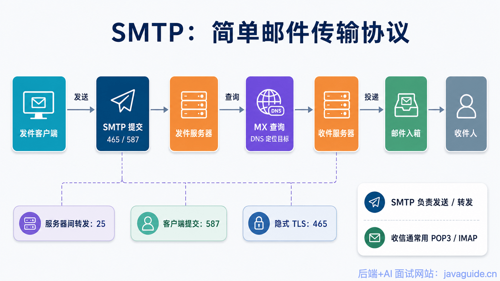
需要注意的是，SMTP 负责邮件发送和邮件服务器之间的转发；POP3/IMAP 负责用户从邮箱服务器收取邮件。
也就是说，邮件从你的邮箱服务器发送到对方邮箱服务器，这个过程通常还是 SMTP；而用户使用客户端查看邮箱里的邮件，通常使用 POP3 或 IMAP。
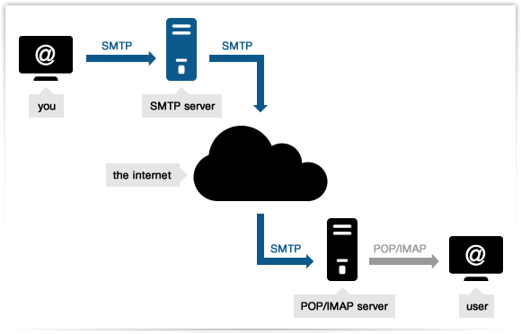
常见 SMTP 相关端口有 25、465、587，三者用途不完全一样：
- 25：邮件服务器之间转发邮件
- 465：隐式 TLS 的邮件提交
- 587：客户端提交邮件
电子邮件的发送过程
比如我的邮箱是 <dabai@cszhinan.com>，我要向 <xiaoma@qq.com> 发送邮件，整个过程可以简单理解为：
- 我通过邮箱客户端或网页邮箱写好邮件。
- 邮件客户端通过 SMTP 协议，把邮件提交给 cszhinan.com 对应的邮件服务器。
- 发送方邮件服务器根据收件人域名 qq.com 查询对应的邮件服务器地址。
- 发送方邮件服务器再通过 SMTP，把邮件投递到 QQ 邮箱服务器。
- QQ 邮箱服务器接收邮件并保存。
- 用户
<xiaoma@qq.com>通过 POP3 或 IMAP 协议从 QQ 邮箱服务器读取邮件。
2.1.4 POP3/IMAP：邮件接收协议
POP3 和 IMAP 都是用于接收邮件的协议，二者也都是基于 TCP 的应用层协议。

POP3 的设计比较简单，常见模式是把邮件从服务器下载到本地。它适合单设备收信，但多设备同步体验较差。
IMAP 是更现代、更常用的邮件接收协议。它支持在服务器端管理邮件，能够同步邮件状态，比如已读、未读、删除、归档、文件夹分类等。因此，如果你同时在手机、电脑、网页端查看同一个邮箱，IMAP 的体验通常会更好。
2.1.5 FTP：文件传输协议
FTP（File Transfer Protocol，文件传输协议） 是一种基于 TCP 的应用层协议，用于在客户端和服务器之间传输文件。
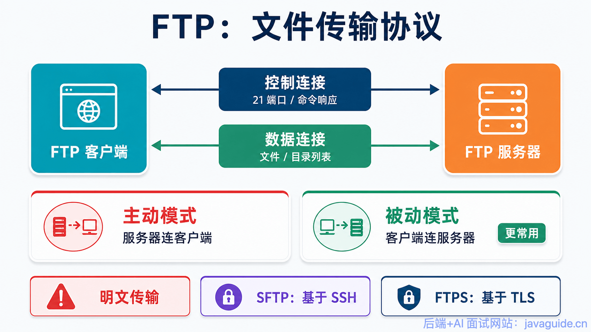
FTP 采用客户端-服务器模型。它比较特殊的一点是：FTP 通常会建立两条 TCP 连接。
- 控制连接：用于传输命令和响应，例如登录、切换目录、删除文件等。
- 数据连接：用于真正传输文件内容或目录列表。
这种将命令和数据分开传输的设计，能够让控制命令和文件数据互不干扰。
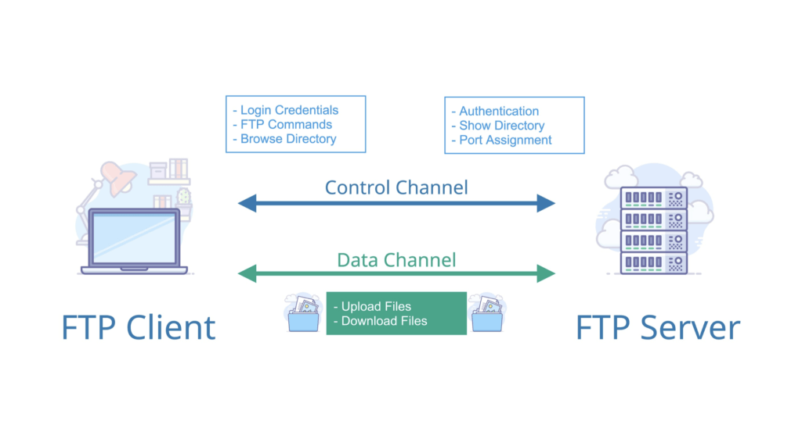
FTP 有主动模式（PORT）和被动模式（PASV）两种数据连接方式：
- 主动模式：客户端通过控制连接告诉服务端自己监听的端口，服务端再主动连接客户端的这个端口建立数据连接。由于服务端要主动连接客户端，如果客户端在 NAT 或防火墙后面，很容易连接失败。
- 被动模式：客户端请求服务端开放一个数据端口，然后由客户端主动连接服务端的数据端口。因为连接方向仍然是客户端到服务端，更容易穿过 NAT 和防火墙，所以实际生产环境中更常用被动模式。
注意：FTP 本身是不安全的。它默认不会加密传输内容，用户名、密码和文件数据都可能被窃听或篡改。
因此，传输敏感文件时不建议使用普通 FTP，可以选择：
- SFTP：基于 SSH 的安全文件传输协议。
- FTPS：在 FTP 基础上增加 TLS/SSL 加密。
2.1.6 Telnet：远程登录协议
Telnet 是一种基于 TCP 的远程登录协议，默认端口是 23。它允许用户通过终端远程登录到服务器，并在远程机器上执行命令。
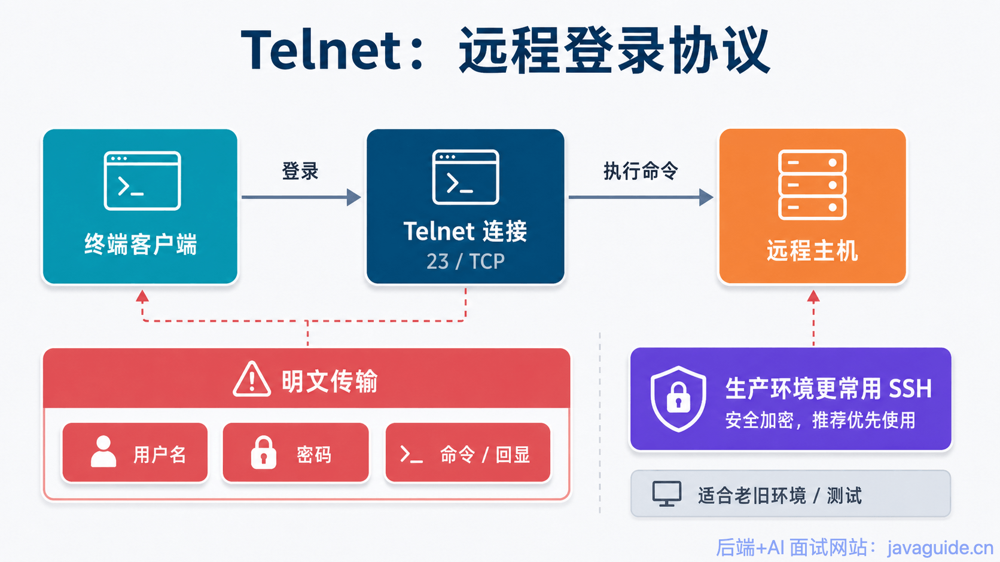
Telnet 最大的问题是：明文传输。
用户名、密码、命令内容和返回结果都不会加密，攻击者如果能监听网络流量，就可能直接看到敏感信息。
因此，Telnet 现在已经很少用于真正的远程管理。实际生产环境中，通常使用 SSH 替代 Telnet。
2.1.7 SSH：安全的网络传输协议
SSH（Secure Shell） 是一种基于 TCP 的安全网络协议，默认端口是 22。它通过加密和认证机制，为远程登录、命令执行和文件传输提供安全保障。
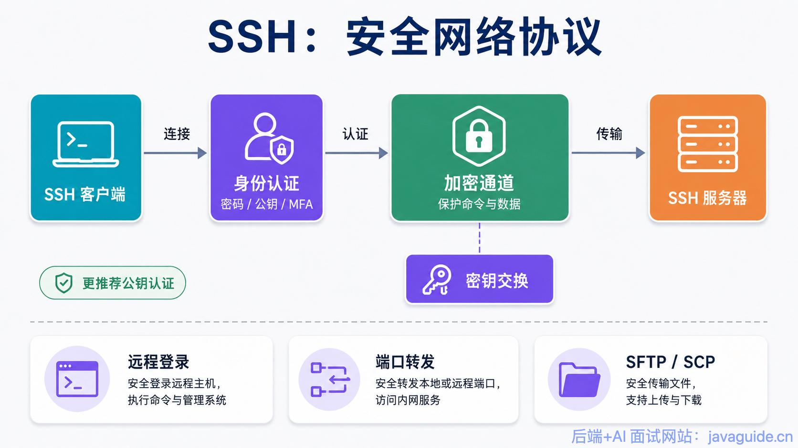
SSH 最经典的用途是登录远程服务器：
ssh user@server_ip
除了远程登录，SSH 还支持：
- 远程执行命令
- 端口转发
- 隧道代理
- X11 转发
- 基于 SFTP 或 SCP 的安全文件传输
SSH 使用客户端-服务器模型。SSH Client 发起连接，SSH Server 监听客户端连接请求。双方会先协商加密算法，并通过密钥交换生成后续通信使用的对称加密密钥。之后的通信内容都会被加密传输。
需要注意的是，SSH 的安全性不仅来自加密传输，也来自身份认证机制。常见认证方式包括：
- 密码认证
- 公钥认证
- 多因素认证
实际生产环境中，更推荐使用公钥认证，并关闭弱密码登录
2.1.8 RTP：实时传输协议
RTP（Real-time Transport Protocol，实时传输协议） 是一种用于传输音频、视频等实时数据的协议。
它通常运行在 UDP 之上。在 TCP/IP 分层模型中，UDP 之上就是应用层，所以 RTP 按分层规则被归入应用层。但它承担的职责（序列号、时间戳、同步、质量反馈）更接近传输层功能，RFC 3550 也说它“通常会集成到应用处理中，而不是作为独立层实现”。
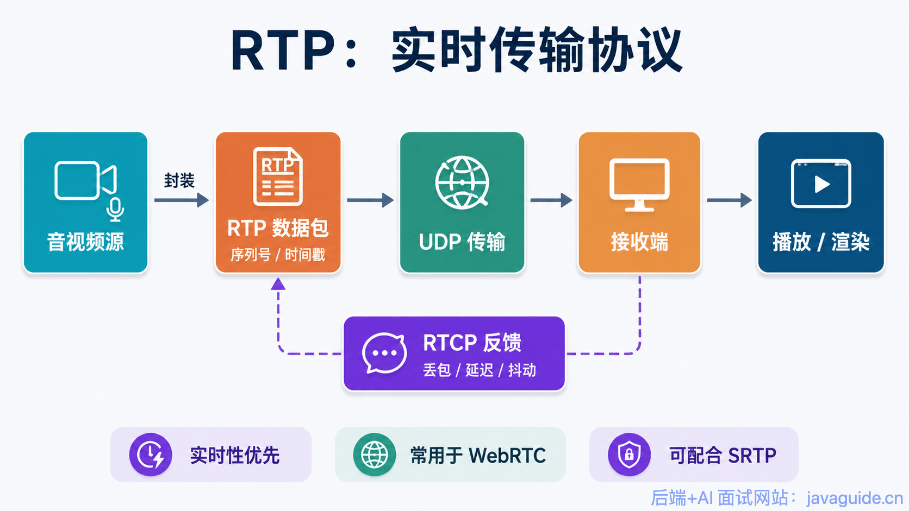
RTP 主要用在语音通话、视频会议、直播等实时场景。它本身不保证可靠传输，也不保证按时到达，而是通过序列号、时间戳等信息帮助接收端进行排序、同步和播放控制。虽然也存在 RTP over TCP 的封装方式（如 RFC 4571），但更多用于穿越防火墙或兼容特定协议栈等特殊场景，实际实时音视频场景中 RTP 仍以 UDP 为主。
RTP 通常会和 RTCP 配合使用：
- RTP：负责传输实时音视频数据。
- RTCP（RTP Control Protocol）：负责传输控制信息和统计信息，比如丢包率、延迟、抖动等。
在 WebRTC 中，RTP/RTCP 是实时音视频传输的重要基础。WebRTC 还会结合 SRTP 加密、拥塞控制、抖动缓冲、NACK、FEC 等机制，提升实时通信的安全性和质量。
需要注意的是，RTP 本身不负责资源预留，也不保证实时传输质量。它提供的是实时媒体传输的基础能力，具体的质量控制需要依赖上层机制配合完成。
2.1.9 DNS：域名系统
DNS（Domain Name System，域名系统） 用于解决域名和 IP 地址之间的映射问题。
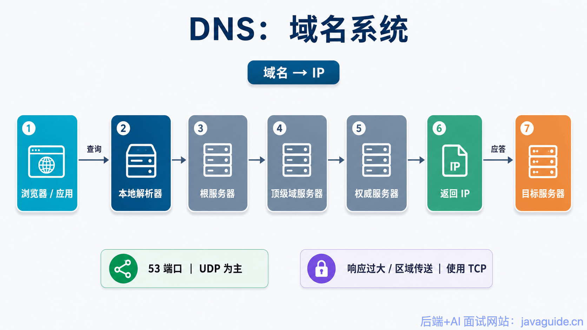
我们访问网站时，通常输入的是域名。但网络通信实际需要的是 IP 地址。DNS 的作用就是把域名解析成对应的 IP 地址。
DNS 通常使用 UDP，默认端口是 53。之所以优先使用 UDP，是因为大多数 DNS 查询和响应都比较小，不需要 TCP 三次握手，响应更快。
现代网络中还出现了更安全的 DNS 方案，比如：
- DoH（DNS over HTTPS）
- DoT（DNS over TLS）
它们的目的都是减少 DNS 明文查询带来的隐私和安全问题。
2.1.10 常见应用层协议端口总结
| 协议 | 默认端口 | 传输层协议 | 主要用途 |
|---|---|---|---|
| HTTP | 80 | TCP | Web 页面访问 |
| HTTPS | 443 | TCP / QUIC | 加密 Web 访问 |
| WebSocket | 80 / 443 | TCP | 双向实时通信 |
| SMTP | 25 / 465 / 587 | TCP | 邮件发送和转发 |
| POP3 | 110 / 995 | TCP | 邮件接收 |
| IMAP | 143 / 993 | TCP | 邮件接收和同步 |
| FTP | 20 / 21 | TCP | 文件传输 |
| SSH | 22 | TCP | 安全远程登录和文件传输 |
| Telnet | 23 | TCP | 明文远程登录 |
| DNS | 53 | UDP / TCP | 域名解析 |
| RTP | 动态端口（偶数），RTCP 用相邻奇数 | UDP 为主 | 实时音视频传输 |
这里 HTTPS 写成 TCP / QUIC，是因为传统 HTTPS 通常基于 TLS over TCP，而 HTTP/3 场景下会基于 QUIC。
三、传输层
四、网络层
4.1 ARP 协议详解（网络层）
IP 地址负责网络层寻址，但数据帧在局域网里真正转发时，还需要知道下一跳设备的 MAC 地址。
ARP 要解决的就是这个转换问题：已知目标 IP 地址，如何找到对应的 MAC 地址。
它看起来简单，却串起了网络层和链路层，也是理解局域网通信、网关转发和 ARP 欺骗的基础。
4.2 NAT 协议详解（网络层）
很多设备在家用网络、公司内网里使用的都是私有 IP 地址，比如 192.168.x.x、10.x.x.x。这些地址不能直接在公网中路由，但内网设备依然可以访问互联网。
这背后通常就有 NAT 在工作。NAT 会在内网地址和公网地址之间做转换，让多个内网设备共享一个或少量公网 IP 对外通信。
五、安全
TCP/IP 协议栈追求互联互通，但很多机制在设计之初并没有把今天的攻击规模和对抗强度都考虑进去。
IP 欺骗、SYN Flood、DDoS、ARP 欺骗、DNS 劫持这些攻击，表面上各不相同，本质上都在利用网络协议里的信任假设、资源消耗点或解析链路。